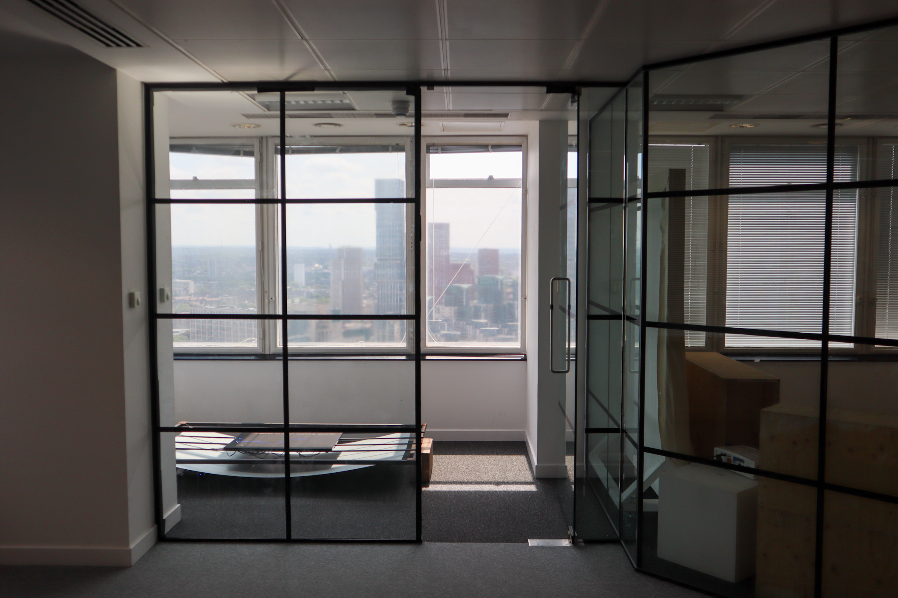

Poetry recontextualised exactly one year after it was written during a thunderstorm on 2/5/24—reimagined through historical lightning strike data mapped precisely onto London.

Continuing practice with LED panels and poetry, this retrospective approaches editing as re-staging: keeping the exact snapshot of a poem and altering its frame instead of its language. The work surfaces segments like a burning haibun, letting lightning data decide when each fragment appears.
Installed against a map of the Thames at Millbank Tower, the panels mirror the view behind them. As the day’s storm data animates the array, the poem traces back onto the city where it was written—an echo of weather, memory, and place.